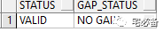

物理备库的Switchover
从这期开始讲Oracle Data Guard方面的内容
Data Guard作为Oracle提供的一个高可用及灾备解决方案,理解并可以实施它对于DBA来说是非常重要套的技能
前面已经介绍如何架设物理备库，这节讲如何对物理备库进行Switchover
Data Guard 环境规划

1. 转换前准备
1.1 查看主库归档日志是否有GAP
SELECT STATUS, GAP_STATUS FROM V$ARCHIVE_DEST_STATUS WHERE DEST_ID = 2;

请确保和备库相关的STATUS栏位为 VALID，GAP_STATUS栏位为NO GAP
1.2 确保备库的临时文件和主库一样
主备库分别执行如下语句
SELECT TMP.NAME FILENAME, BYTES, TS.NAME TABLESPACE
FROM V$TEMPFILE TMP, V$TABLESPACE TS
WHERE TMP.TS# = TS.TS#;
主库:
备库:
请确保表临时文件名称相同，并且数量一致
1.3 消除备库日志应用的延迟(delay)
select delay_mins from v$archive_dest where dest_id = 2;
如果结果不为0，则使用下面语句取消延迟同步并等待应用
ALTER DATABASE RECOVER MANAGED STANDBY DATABASE NODELAY;
1.4 关闭Job自动运行
切换前关闭Job可减少switchover时间
使用下列语句禁用主备库Job自动运行
SQL> ALTER SYSTEM SET job_queue_processes=0 SCOPE=BOTH;
然后关闭正在执行的Job
select * from dba_jobs_running
1.5 RAC环境相关
如果主库为RAC环境，请关闭其他节点，仅保存一个
1.6 ADG环境相关
如果备库开启了实时查询功能(ADG),请先关闭它并启动到mount状态
1.7 在主库新建Standby redo log
详细的SRL介绍请看以前的文章
目录需要事先建立
alter database add standby logfile group 10 ('/oradata/dg1/srl/srl10a.log','/oralog/dg1/srl/srl10b.log') size 52428800;
alter database add standby logfile group 11 ('/oradata/dg1/srl/srl11a.log','/oralog/dg1/srl/srl11b.log') size 52428800;
alter database add standby logfile group 12 ('/oradata/dg1/srl/srl12a.log','/oralog/dg1/srl/srl12b.log') size 52428800;
alter database add standby logfile group 13 ('/oradata/dg1/srl/srl13a.log','/oralog/dg1/srl/srl13b.log') size 52428800;
1.8 参数文件设置
这里需要注意原备库的log_archive_dest_2的设置
在之前的章节中设置成了 ASYNC 这样启动会报错，修改成SYNC即可

2. 执行Switchover
switchover的步骤很简单
-
将主库切换至备库
-
将原备库切换至主库
建议切换过程中打开相应的alert日志以便查看报错
2.1 查看主库是否可以切换至备库
SQL> SELECT SWITCHOVER_STATUS FROM V$DATABASE;
该状态必须是TO STANDBY 或 SESSIONS ACTIVE
2.2 将主库切换至备库
切换之前:
切换语句:
SQL> ALTER DATABASE COMMIT TO SWITCHOVER TO PHYSICAL STANDBY WITH SESSION SHUTDOWN;
WITH SESSION SHUTDOWN在前面的查询为sessions active 时需要加上
在切换至备库之前Oracle会备份当前的控制文件以便需要时重建
2.3 重新mount之前的主库
11g及以后不需要shutdown abort 命令，因为默认会关闭
SQL> SHUTDOWN ABORT;
SQL> STARTUP MOUNT;
这时原来的主库已经是物理备库的角色，这时DG环境中有2个备库角色
2.4 确定原来的备库是否可以切换成主库
SQL> SELECT SWITCHOVER_STATUS FROM V$DATABASE;
该状态必须是 TO PRIMARY 或SESSIONS ACTIVE

2.5 将备库切换至主库
SQL> ALTER DATABASE COMMIT TO SWITCHOVER TO PRIMARY WITH SESSION SHUTDOWN;
WITH SESSION SHUTDOWN在前面的查询为sessions active 时需要加上
这时可以看到原备库已经成为主库

3. 转换后的操作
3.1 备库开启实时同步
SQL> ALTER DATABASE RECOVER MANAGED STANDBY DATABASE USING CURRENT LOGFILE DISCONNECT;
3.2 主库开启最大保护模式
alter database set standby database to maximize availability;
alter database set standby database to maximize protection;

3.3 开启Job自动运行
SQL> ALTER SYSTEM SET job_queue_processes=1000 SCOPE=BOTH;
如上面的命令执行成功则说明配置没有问题，接下来就参照上节的内容监控DG的状态
好了，DataGuard相关的内容就先说到这，还有其他内容后面再补充